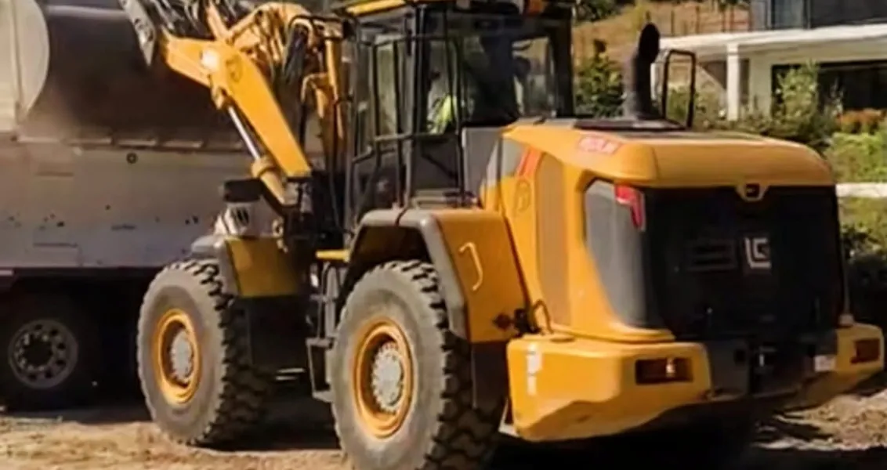
Construção e mineração
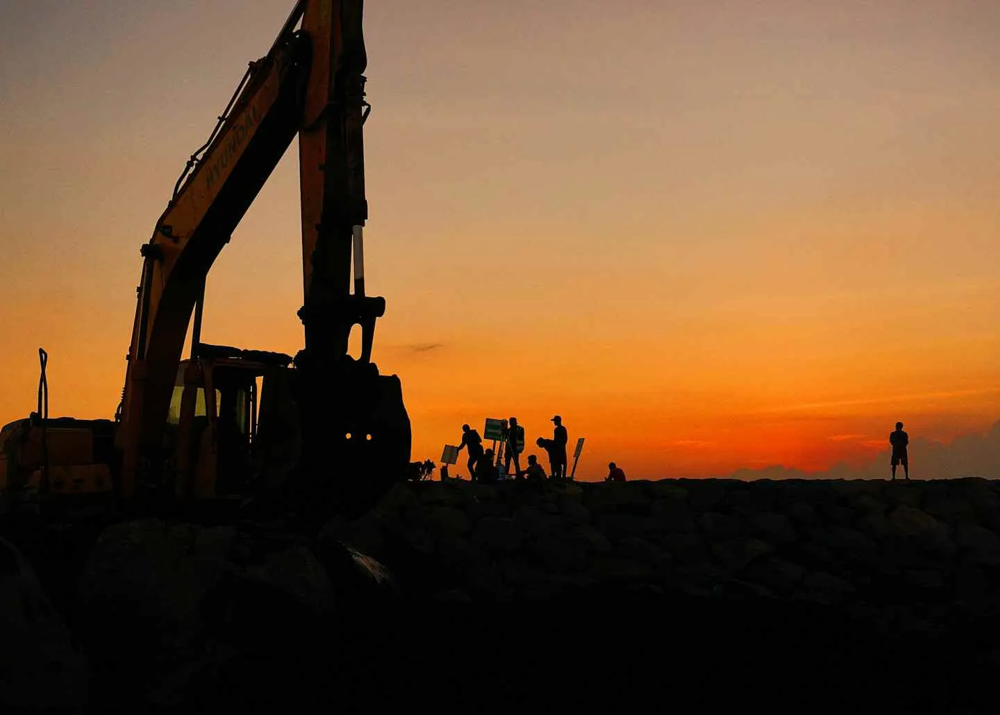
Engenharia, diagnósticos avançados e suporte multimarcas de alta precisão.
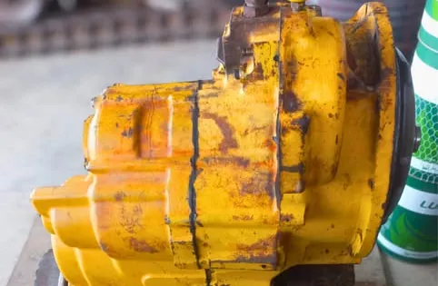
Preventiva, corretiva e padrão montadora.
Saiba mais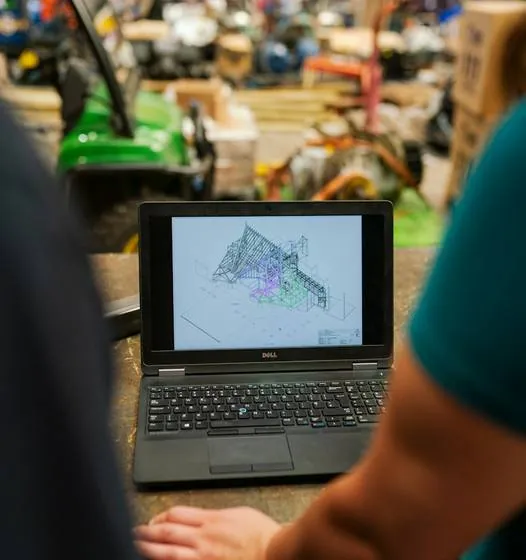
Leitura de módulos e relatório técnico completo.
Saiba mais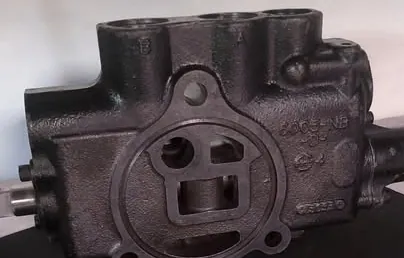
Cordoalhas próprias, conectores e terminais.
Saiba mais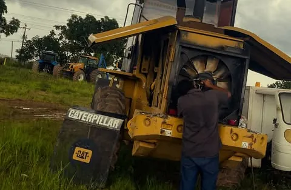
Unidades móveis e oficina centralizada.
Saiba maisA Almeida Tech Maq Ltda é uma empresa estratégica especializada em soluções de alta performance para frotas pesadas e maquinários agrícolas. Sediada em Paragominas - PA, nascemos com o propósito de integrar o que há de mais moderno em mecânica pesada, eletrônica embarcada e engenharia de componentes.
Atuamos diretamente no desenvolvimento de soluções multimarcas, com foco absoluto na trindade de gigantes do mercado global: Caterpillar, John Deere e Volvo.
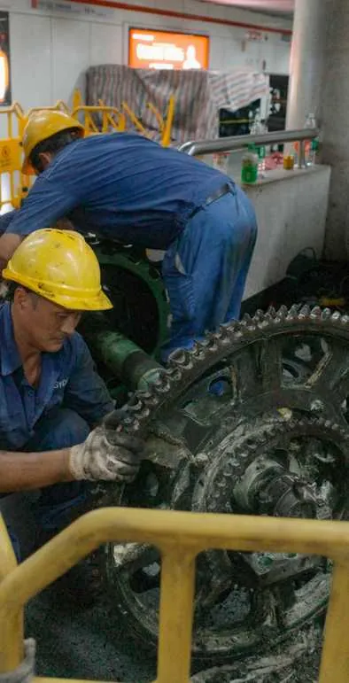
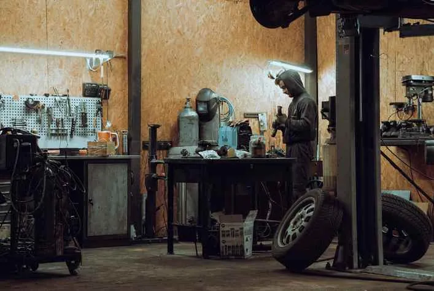
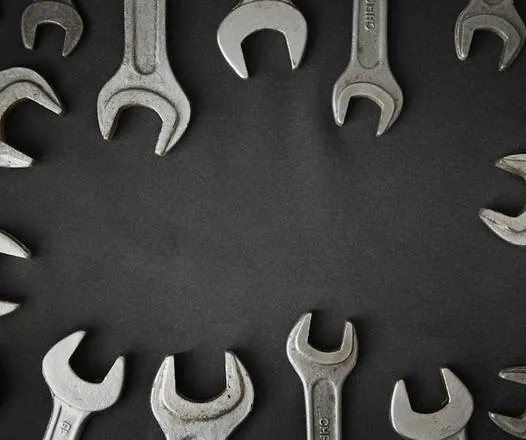
Assegurar a máxima disponibilidade e a potência máxima de frotas pesadas através de soluções técnicas definitivas, eliminando o tempo de máquina parada e mitigando prejuízos operacionais.
Consolidar o maior ecossistema de performance técnica da região, oferecendo suporte dinâmico apoiado por dados reais e laudos de nível de fábrica.
Ser reconhecida nacionalmente como o principal ecossistema independente de suporte técnico, recondicionamento eletrônico e fabricação de componentes para o setor pesado.
Atendemos as duas linhas por completo e de todas as marcas: a linha amarela, de construção e mineração, e a linha verde, de máquinas agrícolas.

Escavadeiras, tratores, carregadeiras, colheitadeiras e implementos: se é linha amarela ou verde, a nossa oficina atende.
O trabalho pesado exige manutenção rigorosa. A Almeida Tech Maq entrega serviços mecânicos de alta complexidade com rigor técnico de concessionária. Atuamos com profissionais altamente qualificados para intervir nos sistemas mais críticos do seu equipamento.
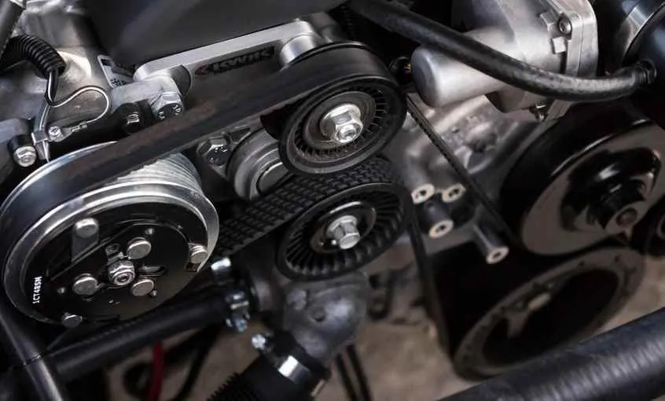
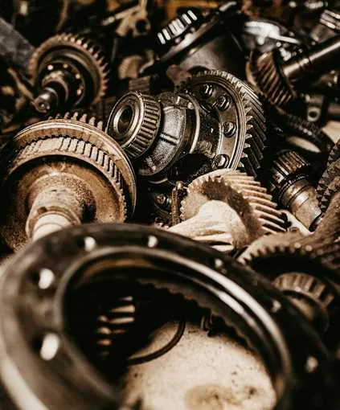
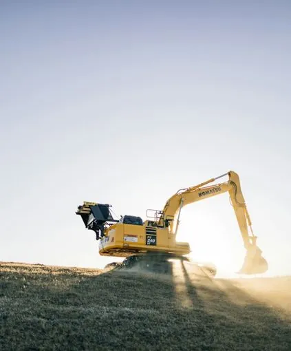
Programação inteligente de revisões, trocas de fluidos, ajustes de válvulas e inspeções estruturais para evitar quebras catastróficas.
Diagnóstico rápido e intervenção direta em motores, transmissões, sistemas de trem de força e sistemas hidráulicos de alta pressão.
Execução de procedimentos técnicos seguindo rigorosamente os manuais e tolerâncias oficiais Cat, John Deere e Volvo.
Máquinas modernas exigem inteligência eletrônica. Na Almeida Tech Maq, eliminamos o “achismo”. Utilizamos scanners industriais avançados e softwares de engenharia para realizar a leitura completa e em tempo real de módulos eletrônicos.
Cada análise gera um documento oficial detalhado: um raio-X sobre parâmetros de injeção, pressões, temperaturas e códigos de falha históricos.
Identificação de anomalias intermitentes nos chicotes, sensores e atuadores antes que causem a parada total da máquina em campo.
Ajuste fino eletrônico de componentes novos ou revisados para operar com máxima eficiência de combustível e potência.
O ambiente severo da mineração, construção e do campo destrói conexões elétricas frágeis. Para solucionar falhas crônicas de oxidação e mau contato, desenvolvemos engenharia própria e mantemos um estoque robusto de peças eletrônicas de alta durabilidade.
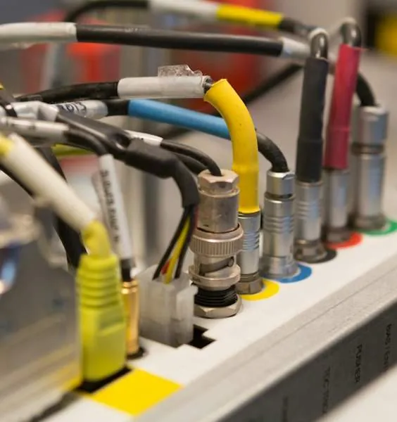
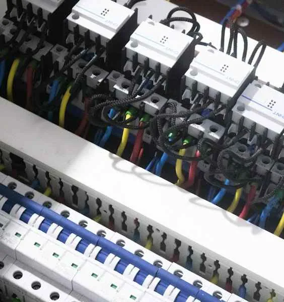
Cordoalhas de aterramento e potência sob medida, super reforçadas para suportar vibração extrema e contaminação por agentes químicos ou umidade.
Distribuição e venda de componentes originais ou de primeira linha para reposição imediata nos chicotes Caterpillar, John Deere e Volvo.
Recuperamos componentes desgastados da sua máquina e vendemos peças recondicionadas, revisadas e testadas na nossa oficina, com custo menor que o de uma peça nova.
A produtividade da sua operação depende da velocidade da resposta. A Almeida Tech Maq estruturou sua logística e engenharia de atendimento em duas modalidades para reduzir drasticamente o seu tempo de espera.
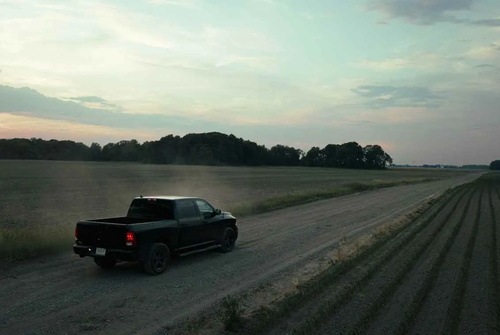
Unidades móveis com ferramental pesado e laboratório de diagnóstico móvel, prontas para deslocamento imediato até fazendas, usinas ou frentes de mineração.
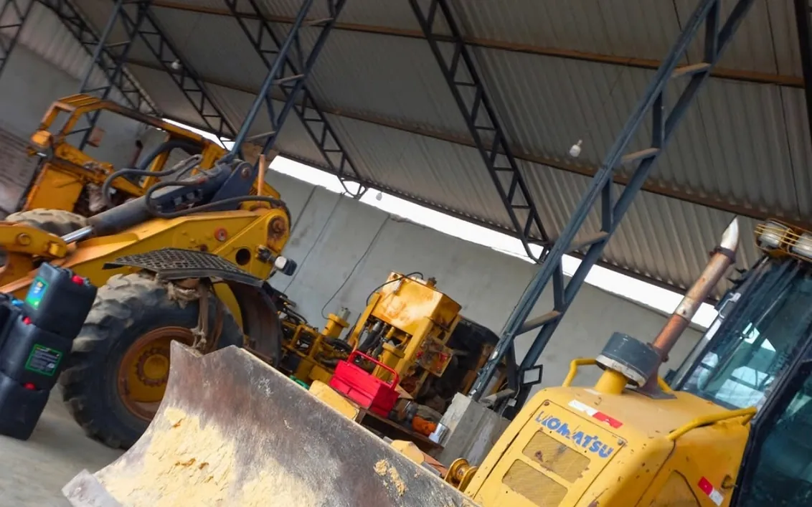
Oficina centralizada para reformas pesadas, testes de bancada em componentes elétricos, montagens de precisão e usinagem especializada de cordoalhas.
Na Almeida Tech Maq, performance, durabilidade e tecnologia andam juntas no campo e na estrada. Conte com quem entende de máquinas pesadas para elevar a produtividade do seu negócio.